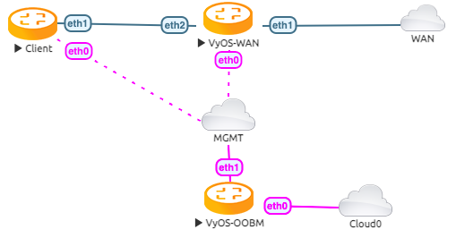

Tunnelbroker.net (IPv6)
This guide walks through the setup of https://www.tunnelbroker.net/ for an IPv6 Tunnel.
Prerequisites
A public, routable IPv4 address. This does not necessarily need to be static, but you will need to update the tunnel endpoint when/if your IP address changes, which can be done with a script and a scheduled task.
Account at https://www.tunnelbroker.net/
Requested a “Regular Tunnel”. You want to choose a location that is closest to your physical location for the best response time.
Topology
The example topology has 2 VyOS routers. One as The WAN Router and on as a Client, to test a single LAN setup
Configuration
First, we configure the vyos-wan interface to get a DHCP address.
set interfaces ethernet eth1 address dhcp
Now we are able to setup the tunnel interface.
set interfaces tunnel tun0 address '2001:470:6c:779::2/64' #Tunnelbroker Client IPv6 Address
set interfaces tunnel tun0 description 'HE.NET IPv6 Tunnel'
set interfaces tunnel tun0 encapsulation 'sit'
set interfaces tunnel tun0 remote '216.66.86.114' #Tunnelbroker Server IPv4 Address
set interfaces tunnel tun0 source-address '172.29.129.60' # Tunnelbroker Client IPv4 Address or if there is NAT the current WAN interface address
Setup the ipv6 default route to the tunnel interface
set protocols static route6 ::/0 interface tun0
Now you should be able to ping a public IPv6 Address
vyos@vyos-wan:~$ ping 2001:470:20::2 count 4
PING 2001:470:20::2(2001:470:20::2) 56 data bytes
64 bytes from 2001:470:20::2: icmp_seq=1 ttl=64 time=39.4 ms
64 bytes from 2001:470:20::2: icmp_seq=2 ttl=64 time=29.9 ms
64 bytes from 2001:470:20::2: icmp_seq=3 ttl=64 time=30.0 ms
64 bytes from 2001:470:20::2: icmp_seq=4 ttl=64 time=29.9 ms
--- 2001:470:20::2 ping statistics ---
4 packets transmitted, 4 received, 0% packet loss, time 3005ms
rtt min/avg/max/mdev = 29.885/32.293/39.371/4.086 ms
Assuming the pings are successful, you need to add some DNS servers. Some options:
set system name-server 2001:470:20::2 #Tunnelbroker DNS Server
You should now be able to ping something by IPv6 DNS name:
vyos@vyos-wan:~$ ping tunnelbroker.net count 4
PING tunnelbroker.net(tunnelbroker.net (2001:470:0:63::2)) 56 data bytes
64 bytes from tunnelbroker.net (2001:470:0:63::2): icmp_seq=1 ttl=46 time=200 ms
64 bytes from tunnelbroker.net (2001:470:0:63::2): icmp_seq=2 ttl=46 time=176 ms
64 bytes from tunnelbroker.net (2001:470:0:63::2): icmp_seq=3 ttl=46 time=244 ms
64 bytes from tunnelbroker.net (2001:470:0:63::2): icmp_seq=4 ttl=46 time=176 ms
--- tunnelbroker.net ping statistics ---
4 packets transmitted, 4 received, 0% packet loss, time 3002ms
rtt min/avg/max/mdev = 175.737/198.653/243.621/27.714 ms
LAN Configuration
At this point, your VyOS install should have full IPv6, but now your LAN devices need access.
With Tunnelbroker.net, you have two options:
Routed /64. This is the default assignment. In IPv6-land, it’s good for a single “LAN”, and is somewhat equivalent to a /24.
Routed /48. This is something you can request by clicking the “Assign /48” link in the Tunnelbroker.net tunnel config. It allows you to have up to 65k
Unlike IPv4, IPv6 is really not designed to be broken up smaller than /64. So if you ever want to have multiple LANs, VLANs, DMZ, etc, you’ll want to ignore the assigned /64, and request the /48 and use that.
Single LAN Setup
Single LAN setup where eth2 is your LAN interface. Use the Tunnelbroker Routed /64 prefix:
set interface ethernet eth2 address '2001:470:6d:778::1/64' # Tunnelbroker Routed /64 prefix
set service router-advert interface eth2 name-server '2001:470:20::2'
set service router-advert interface eth2 prefix 2001:470:6d:778::/64 # Tunnelbroker Routed /64 prefix
Please note, ‘autonomous-flag’ and ‘on-link-flag’ are enabled by default, ‘valid-lifetime’ and ‘preferred-lifetime’ are set to default values of 30 days and 4 hours respectively.
And the client to receive an IPv6 address with stateless autoconfig.
set interfaces ethernet eth1 ipv6 address autoconf
This accomplishes a few things:
Sets your LAN interface’s IP address
Enables router advertisements. This is an IPv6 alternative for DHCP (though DHCPv6 can still be used). With RAs, Your devices will automatically find the information they need for routing and DNS.
Now the Client is able to ping a public IPv6 address
vyos@client:~$ ping 2001:470:20::2 count 4
PING 2001:470:20::2(2001:470:20::2) 56 data bytes
64 bytes from 2001:470:20::2: icmp_seq=1 ttl=63 time=30.5 ms
64 bytes from 2001:470:20::2: icmp_seq=2 ttl=63 time=29.6 ms
64 bytes from 2001:470:20::2: icmp_seq=3 ttl=63 time=29.9 ms
64 bytes from 2001:470:20::2: icmp_seq=4 ttl=63 time=29.8 ms
--- 2001:470:20::2 ping statistics ---
4 packets transmitted, 4 received, 0% packet loss, time 3005ms
rtt min/avg/max/mdev = 29.578/29.959/30.490/0.333 ms
Multiple LAN/DMZ Setup
That’s how you can expand the example above. Use the Routed /48 information. This allows you to assign a different /64 to every interface, LAN, or even device. Or you could break your network into smaller chunks like /56 or /60.
The format of these addresses:
2001:470:xxxx::/48: The whole subnet. xxxx should come from Tunnelbroker.
2001:470:xxxx:1::/64: A subnet suitable for a LAN
2001:470:xxxx:2::/64: Another subnet
2001:470:xxxx:ffff:/64: The last usable /64 subnet.
In the above examples, 1,2,ffff are all chosen by you. You can use 1-ffff (1-65535).
So, when your LAN is eth1, your DMZ is eth2, your cameras are on eth3, etc:
set interfaces ethernet eth1 address '2001:470:xxxx:1::1/64'
set service router-advert interface eth1 name-server '2001:470:20::2'
set service router-advert interface eth1 prefix 2001:470:xxxx:1::/64
set interfaces ethernet eth2 address '2001:470:xxxx:2::1/64'
set service router-advert interface eth2 name-server '2001:470:20::2'
set service router-advert interface eth2 prefix 2001:470:xxxx:2::/64
set interfaces ethernet eth3 address '2001:470:xxxx:3::1/64'
set service router-advert interface eth3 name-server '2001:470:20::2'
set service router-advert interface eth3 prefix 2001:470:xxxx:3::/64
Please note, ‘autonomous-flag’ and ‘on-link-flag’ are enabled by default, ‘valid-lifetime’ and ‘preferred-lifetime’ are set to default values of 30 days and 4 hours respectively.
Firewall
Finally, don’t forget the firewall. The usage is identical, except for instead of set firewall name NAME, you would use set firewall ipv6-name NAME.
Similarly, to attach the firewall, you would use set interfaces ethernet eth0 firewall in ipv6-name or et firewall zone LOCAL from WAN firewall ipv6-name.